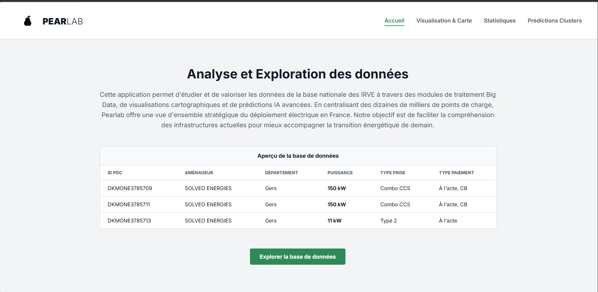
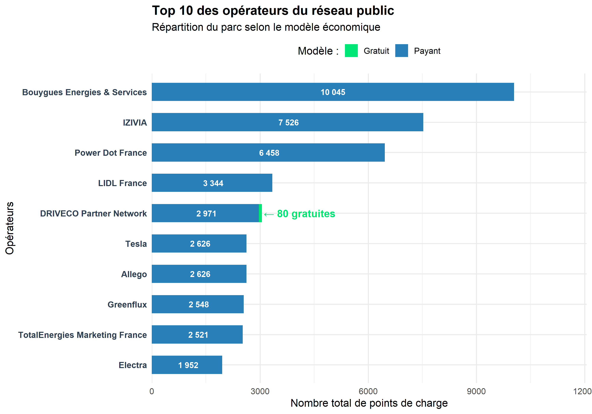
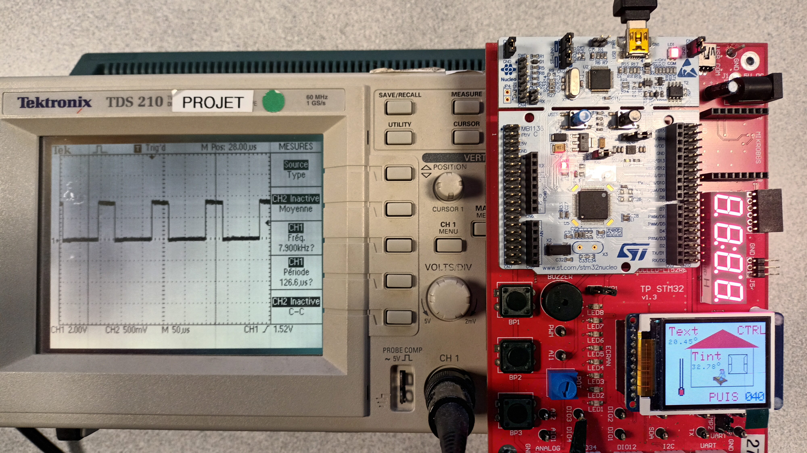

Infrastructure & Cybersecurity Engineer.
Seeking a technical internship (April - Sept 2027),
leading to a work-study contract.
(Continuous schedule: 6 months school / 6 months company)
Engineering student at ISEN Ouest, specializing in infrastructure protection and critical systems management.
My approach is strictly operational. My goal goes beyond theoretical study: I design robust architectures, configure segmented networks, and deploy effective detection tools against modern threats.
Passionate about IT network architecture, my background is built on continuous technical progression. From my early training to my current experience, I combine environment mastery (Linux, Active Directory) with automation to ensure the security and operational maintenance of information systems.
Log analysis, anomaly detection (SIEM, IDS), Active Directory hardening, and virtualization environment security.
Linux/Windows administration, routing, VLAN segmentation, and secure architecture configuration (Firewalls).
Scripting (Python, Bash, C), database management, and algorithmic modeling for system optimization.
Development of an object-oriented threat detection tool. Automated parsing of complex log files, IP address tracing, and high-risk security event flagging.
Complete 3-microservice pipeline: data processing (R), machine learning (Scikit-Learn), and a web mapping interface (Leaflet) containerized with Docker.
Design of a habitat regulation simulator. I2C interfacing with microcontrollers and hardware parameter modeling.
Complete data engineering pipeline. Python ETL (SQLite) and linear regression modeling, coupled with an ultra-low latency execution engine in C.
The modern engineer is an active participant in society. From critical analysis of targeted advertising to my commitment to my school's outreach.
Prediction Visualization: Interactive zoom on the Caen urban area (Hérouville-Saint-Clair). The AI model classifies the charging station location type, identifiable by a specific color code (e.g., blue markers for "on-street", orange for "public parking", green for "private parking for public use").

User Interface: Front-end design of a dashboard centralizing Big Data analysis, map visualizations, and Machine Learning models for EVCS data exploration.

Concentrated Market: Bouygues dominates with >10,000 stations, followed by IZIVIA. The economic model is shifting towards strict profitability with the near disappearance of free charging (with the notable exception of DRIVECO and its 80 free stations).
Monitoring Interface: Visualization of data exported by the Python script. The SIEM parses logs, automatically classifies the threat level (Low, Medium, Critical), and prepares the JSON export for incident response teams.
TFT LCD Display: Programming the embedded user interface for real-time rendering of thermal variables (temperature, power, simulation state).
Thermal Simulation: Overview of the board in action. Sensor data acquisition and I2C interfacing.

Signal Analysis: Hardware validation with visualization of control signals directly on the oscilloscope to ensure regulation accuracy.
Software Acquisition: Real-time tracking of temperature variations on the PC interface in direct communication with the microcontroller.
Correlation Matrix: Evaluation of daily return covariance between various major assets to optimize simulated portfolio diversification.
Linear Regression: Trading signal identification through linear relationship analysis (0.59 coefficient) between tech stock market movements.
Engineering finds its true meaning when connected to people. Combining technical rigor with project management, I invite you to explore my portfolio. I am fully available to discuss future collaboration opportunities.